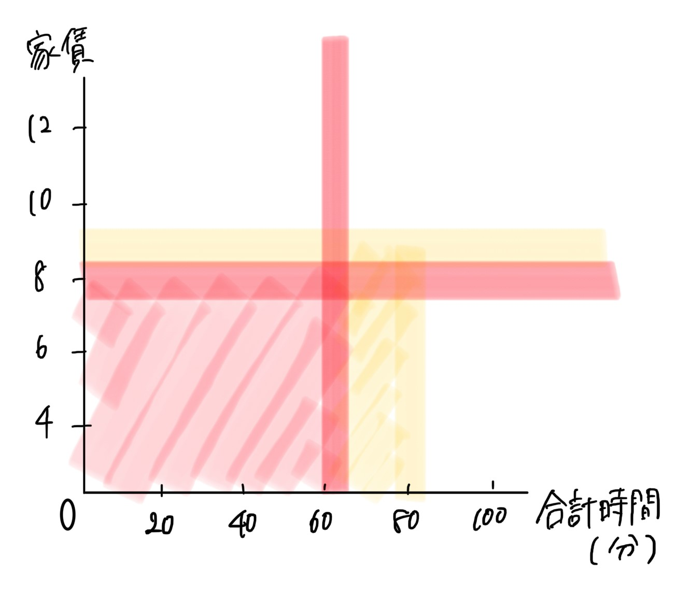

ターゲット
- 仕送りありで一人暮らしを始めた地方出身者
- ガッツリ
条件
- 家賃はあまり高くないけど、安すぎでもない
- 通学時間は最大1時間程度
- （自炊すると仮定して、）通学区域にスーパーやショップがある
条件の理由
1.家賃が高すぎる事は金額的に難しいし、安いところはそれだけ治安もよくないと不動産から言われた体験があるため2.1時間以上だと、実家が近い人だと実家から通えそうだから、一人暮らしをする必要がないため
3.一人暮らしをするにあたって、生活圏を作りやすい方がいいから
理想
赤線の中に収めたい(黄色は妥協)
路線別に見る
A.合計時間と家賃
理想内には相鉄本線、JR横浜線、東急東横線、京浜東北線などがある
B.平均家賃
この路線の中では、相鉄本線、JR横浜線で見ることにする
駅別に
相鉄本線とJR横浜線 合計時間と家賃
相鉄本線とJR横浜線の敷金と礼金
まとめ
こう見ると、星川駅が良さそうだ。地図上で見ても大学からそこまで離れていないためオススメの駅の一つにするしかし、家賃安すぎないことが今回の条件のため、西横浜駅もオススメ駅とする